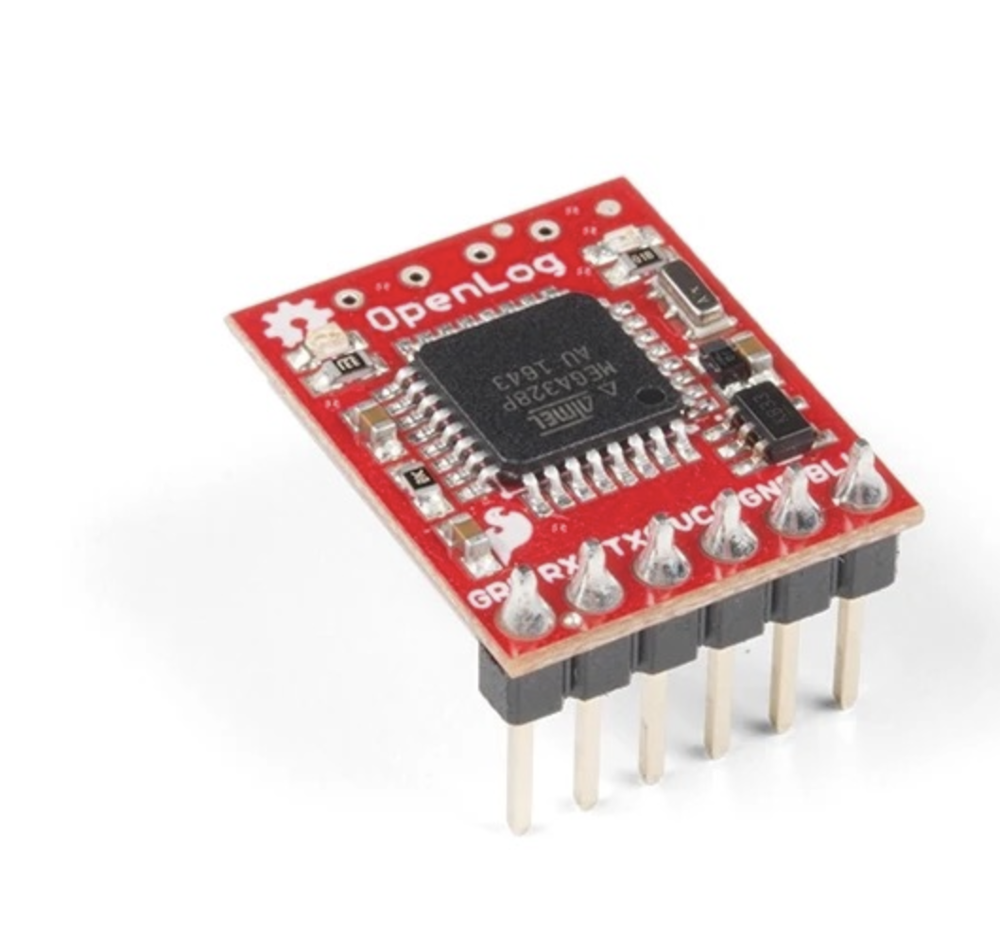
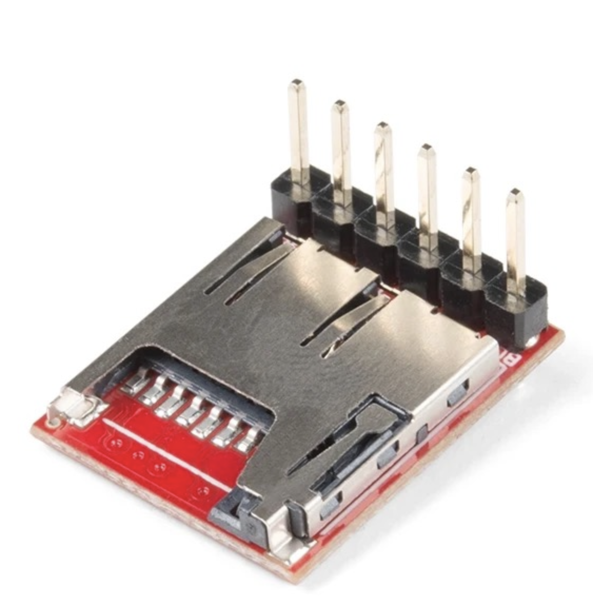
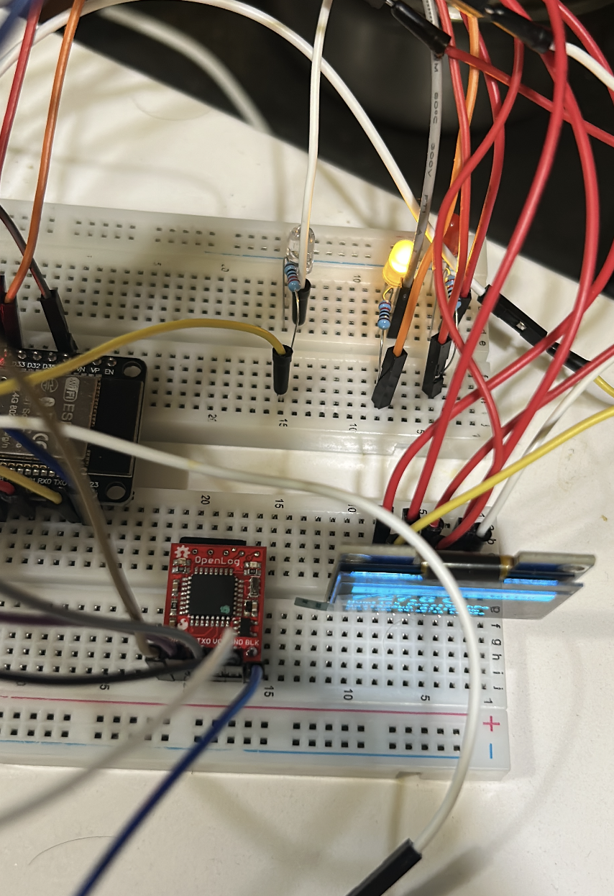
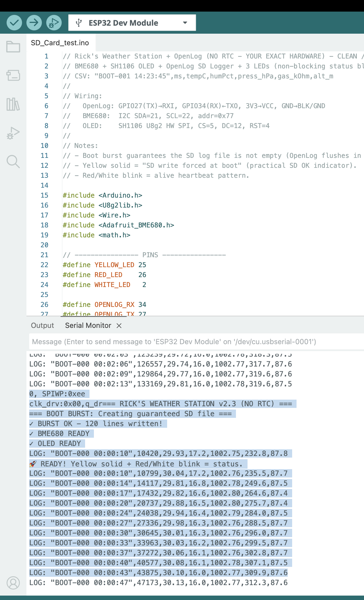
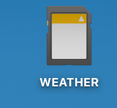
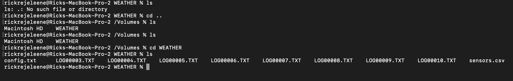
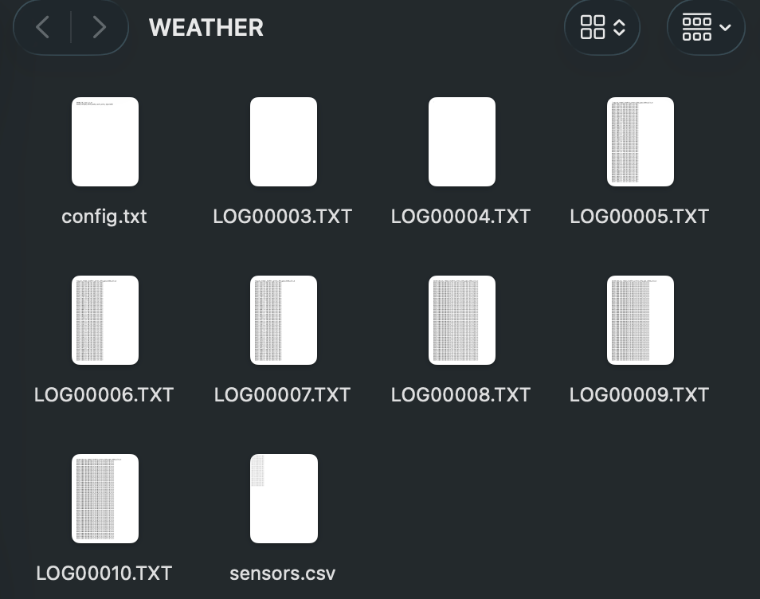

datetime,ms,tempC,humPct,press_hPa,gas_kOhm,alt_m
BOOT-000 00:00:00,0,0.00,0.0,0.00,0.0,0.0
BOOT-000 00:00:00,0,0.00,0.0,0.00,0.0,0.0
BOOT-000 00:00:00,0,0.00,0.0,0.00,0.0,0.0
BOOT-000 00:00:00,0,0.00,0.0,0.00,0.0,0.0
BOOT-000 00:00:00,0,0.00,0.0,0.00,0.0,0.0
BOOT-000 00:00:00,0,0.00,0.0,0.00,0.0,0.0
BOOT-000 00:00:00,0,0.00,0.0,0.00,0.0,0.0
BOOT-000 00:00:00,0,0.00,0.0,0.00,0.0,0.0
BOOT-000 00:00:00,0,0.00,0.0,0.00,0.0,0.0
BOOT-000 00:00:00,0,0.00,0.0,0.00,0.0,0.0
BOOT-000 00:00:00,0,0.00,0.0,0.00,0.0,0.0
BOOT-000 00:00:00,0,0.00,0.0,0.00,0.0,0.0
BOOT-000 00:00:00,0,0.00,0.0,0.00,0.0,0.0
BOOT-000 00:00:00,0,0.00,0.0,0.00,0.0,0.0
BOOT-000 00:00:00,0,0.00,0.0,0.00,0.0,0.0
BOOT-000 00:00:00,0,0.00,0.0,0.00,0.0,0.0
BOOT-000 00:00:00,0,0.00,0.0,0.00,0.0,0.0
BOOT-000 00:00:00,0,0.00,0.0,0.00,0.0,0.0
BOOT-000 00:00:00,0,0.00,0.0,0.00,0.0,0.0How to store and build weather data logging using ESP32?
A Practical Tutorial for ESP32-C with SH1106 OLED, BME680, OpenLog SD Logger, and 3 LEDs
Engineering
Tutorial
Electrical Engineering
Electronics
Embedded Systems
Computer Science
In this tutorial, I give you a dataset of temperature readings collected over a day using an ESP32-C-based weather station.
1 Introduction
Data, data, almost data is the new oil, and logging is the pipeline that turns raw sensor readings into a usable resource. For Machine Learning, without data, we can’t train models. For automation, without data, we can’t make informed decisions. For debugging, without data, we can’t understand what went wrong. In embedded systems, logging is the critical feature that transforms a live device into a system that can also remember.
So, in order to collect data, We use SparkFun’s OpenLogger with Headers. SparkFun OpenLog is the logger used in this project.1

In this project, I built a small embedded Weather station + black-box logger using an ESP32-C, a BME680 environmental sensor, an SH1106 OLED display, an OpenLog SD logger, and three LEDs for visible status feedback. The purpose of the build was to create a system that can observe, display, and most importantly record what it is doing over time.

That recording feature is what I mean by a black-box capability. In practical embedded systems, one of the most useful things a device can do is leave behind a trace of its behavior. If something goes wrong, if readings drift, if the board reboots, or if the environment changes unexpectedly, logs help explain what happened. Without logging, many electronics projects remain blind prototypes. With logging, they begin to behave more like instruments.
This build became my first practical step toward a larger goal: building a more intelligent sensing and control platform, eventually something closer to a custom environmental controller or smart AC-style system. Before a system becomes “intelligent,” it must first become observable. That is what this project does.
2 Project goal
The goal of this build was to create a stable embedded logger with four jobs. First, the BME680 measures environmental conditions such as temperature, humidity, pressure, and gas resistance. Second, the OLED provides local live feedback so that I can see what the system is doing without depending entirely on a laptop. Third, the three LEDs communicate status visually. Fourth, the OpenLog writes the data to a microSD card so that the system has a persistent record of measurements over time.
This combination is powerful because it covers multiple layers of usability. The OLED is for immediate human inspection. The LEDs are for quick status signaling. The OpenLog is for durable storage. The ESP32 ties everything together and schedules the behavior.
3 Why logging matters
Logging is one of the most important features in embedded engineering because it turns a live device into a system that can also remember. A sensor reading shown on a screen is useful only in the present moment. A log entry, by contrast, becomes part of a history. That history can later be analyzed, graphed, parsed, compared, or used to debug problems.
When working with temperature, humidity, pressure, or gas values, logging becomes especially important because environmental behavior changes over time. A single reading tells almost nothing. A sequence of readings tells a story. You can begin to observe stability, drift, spikes, cycles, and system response. For larger future goals such as automation or machine learning, this historical data becomes indispensable.
A black-box feature is therefore not a luxury add-on. It is foundational. If I later want the system to make smarter decisions, detect anomalies, or learn environmental patterns, logging is the first step.
4 Hardware used
This version uses the following hardware:
- ESP32-C-class board
- BME680 environmental sensor
- SH1106 OLED display
- SparkFun OpenLog SD logger
- 3 LEDs: yellow, red, and white
- Breadboard / jumper wires / power connections
- MicroSD card in the OpenLog
Each part has a specific role. The ESP32 is the controller. The BME680 is the environmental sensing module. The SH1106 OLED gives a local user interface. The OpenLog handles persistent serial-to-SD logging. The LEDs provide quick visible status without needing to read the screen.
5 Why OpenLog was a good choice
One of the easiest ways to add persistent logging to a microcontroller project is to use a dedicated serial logger like OpenLog. The ESP32 simply sends text over a UART serial line, and OpenLog writes that stream to the SD card. This is attractive because it separates concerns. The ESP32 does not have to manage a full SD card filesystem stack inside the sketch. Instead, it only needs to format a clean line of text and transmit it.
That makes development faster and conceptually cleaner. It also mirrors how many real systems are built: one part senses and computes, another part stores, another part displays. In this build, OpenLog acts like a small dedicated black-box recorder.
6 Wiring used in this build
The wiring used in this project follows the exact layout in the code.
6.1 OpenLog wiring
The OpenLog is connected through a serial UART link:
GPIO27 (TX)→OpenLog RXIGPIO34 (RX)←OpenLog TXO3V3→VCCGND→BLK/GND
This means the ESP32 transmits log lines to OpenLog through Serial2.
6.2 BME680 wiring
The BME680 uses I2C:
SDA = GPIO21SCL = GPIO22- Address =
0x77
This is a common and convenient way to interface with the BME680.
6.3 OLED wiring
The SH1106 OLED in this project is driven using hardware SPI through U8g2:
CS = GPIO5DC = GPIO12RST = GPIO4
This is different from many small OLED tutorials that use I2C. In this build, the OLED is explicitly configured as an SPI display.
6.4 LEDs
The three LEDs are connected as status indicators:
YELLOW_LED = GPIO25RED_LED = GPIO26WHITE_LED = GPIO2
The yellow LED acts as the SD/logging confirmation indicator. The red and white LEDs alternate in a heartbeat pattern to show that the device is alive.
7 System behavior
The system was designed to behave in a very readable and stable way.
At boot, the ESP32 initializes the serial monitor, configures the LEDs, starts the OpenLog serial interface, and then performs a boot burst write. This burst is important because OpenLog writes to the SD card in blocks. If too little data is sent at startup, the file may remain empty or look incomplete. To solve that, the system deliberately sends a burst of placeholder lines so that the SD card definitely receives enough data to commit the file.
After that, the BME680 is initialized on the I2C bus, and the SH1106 OLED is started. If the sensor initializes correctly, the system reads the first sample, logs it, and displays it. From there, the main loop continues running. The LEDs update in a non-blocking pattern, the display rotates between multiple pages, sensor readings refresh, and the logger writes a new CSV line every few seconds.
This design is simple, but it is already quite powerful. It combines sensor acquisition, local visualization, persistent logging, and human-readable status signaling in one integrated loop.
8 Meaning of the LEDs
The LEDs are not decorative. They function as a compact status language.
The yellow LED indicates that the SD logging file was successfully forced into existence at boot. In this project, yellow solid means that the OpenLog boot write succeeded and the system considers SD logging confirmed.
The red and white LEDs alternate in a heartbeat pattern. Their purpose is to show that the board is alive and actively cycling. This is useful because even if I am not reading the OLED, I can still see that the device has not frozen.
This kind of visible status behavior is common in good embedded design. Not everything should depend on a serial monitor or a display. LEDs give immediate feedback from across the room.
9 Logging format
The logger writes structured lines in the following form:
"BOOT-001 14:23:45",149705,28.20,19.8,981.08,343.2,271.3
10 Code
// Rick's Weather Station + OpenLog (NO RTC - YOUR EXACT HARDWARE) - CLEAN / STABLE v2.3
// BME680 + SH1106 OLED + OpenLog SD Logger + 3 LEDs (non-blocking status blink)
// CSV: "BOOT-001 14:23:45",ms,tempC,humPct,press_hPa,gas_kOhm,alt_m
//
// Wiring:
// OpenLog: GPIO27(TX)→RXI, GPIO34(RX)←TXO, 3V3→VCC, GND→BLK/GND
// BME680: I2C SDA=21, SCL=22, addr=0x77
// OLED: SH1106 U8g2 HW SPI, CS=5, DC=12, RST=4
//
// Notes:
// - Boot burst guarantees the SD log file is not empty (OpenLog flushes in blocks).
// - Yellow solid = "SD write forced at boot" (practical SD OK indicator).
// - Red/White blink = alive heartbeat pattern.
#include <Arduino.h>
#include <U8g2lib.h>
#include <Wire.h>
#include <Adafruit_BME680.h>
#include <math.h>
// ---------------- PINS ----------------
#define YELLOW_LED 25
#define RED_LED 26
#define WHITE_LED 2
#define OPENLOG_RX 34
#define OPENLOG_TX 27
// ---------------- HARDWARE ----------------
U8G2_SH1106_128X64_NONAME_F_4W_HW_SPI u8g2(U8G2_R2, 5, 12, 4);
Adafruit_BME680 bme;
// ---------------- CONSTANTS ----------------
static const uint32_t LOG_INTERVAL_MS = 3000;
static const uint32_t DISPLAY_CYCLE_MS = 6000;
static const uint32_t LED_BLINK_MS = 800;
static const int BURST_LINES = 120;
// Altitude mode
// 0 = estimated altitude (sea-level assumed 1013.25)
// 1 = relative altitude vs Euclid elevation (subtract ELEVATION_METERS)
#define ALTITUDE_RELATIVE 0
static const float ELEVATION_METERS = 207.0f;
// ---------------- STATE ----------------
int displayMode = 0;
bool fileConfirmed = false;
int totalLogCount = 0;
unsigned long patternTimer = 0;
unsigned long lastLogTime = 0;
unsigned long lastLedBlink = 0;
int ledPattern = 0;
// Last good sensor values (fallback if read fails)
float sv_temp = 22.5f;
float sv_humidity = 0.0f;
float sv_pressure = 1013.25f;
float sv_gas = 0.0f;
float sv_altitude = 0.0f;
// ---------------- LED HELPERS ----------------
static void allLedsOff() {
digitalWrite(YELLOW_LED, LOW);
digitalWrite(RED_LED, LOW);
digitalWrite(WHITE_LED, LOW);
}
static void blinkYellowBlocking(int times) {
for (int i = 0; i < times; i++) {
digitalWrite(YELLOW_LED, HIGH); delay(150);
digitalWrite(YELLOW_LED, LOW); delay(100);
}
}
// Non-blocking status LEDs:
// - Yellow solid if fileConfirmed
// - Red/White alternate blink to show "alive"
static void updateStatusLeds() {
unsigned long now = millis();
if (now - lastLedBlink < LED_BLINK_MS) return;
lastLedBlink = now;
ledPattern = (ledPattern + 1) % 4;
// Yellow = SD forced-write confirmed at boot
digitalWrite(YELLOW_LED, fileConfirmed ? HIGH : LOW);
switch (ledPattern) {
case 0: digitalWrite(RED_LED, LOW); digitalWrite(WHITE_LED, HIGH); break;
case 1: digitalWrite(RED_LED, LOW); digitalWrite(WHITE_LED, LOW); break;
case 2: digitalWrite(RED_LED, HIGH); digitalWrite(WHITE_LED, LOW); break;
case 3: digitalWrite(RED_LED, LOW); digitalWrite(WHITE_LED, LOW); break;
}
}
// ---------------- UPTIME TIMESTAMP ----------------
static void getDateTime(char* out, size_t outLen) {
unsigned long totalSec = millis() / 1000UL;
uint32_t days = totalSec / 86400UL;
uint32_t hours = (totalSec % 86400UL) / 3600UL;
uint32_t minutes = (totalSec % 3600UL) / 60UL;
uint32_t seconds = totalSec % 60UL;
snprintf(out, outLen, "BOOT-%03lu %02lu:%02lu:%02lu",
(unsigned long)days,
(unsigned long)hours,
(unsigned long)minutes,
(unsigned long)seconds);
}
// ---------------- SENSOR READ ----------------
static bool readSensor() {
if (!bme.performReading()) return false;
sv_temp = bme.temperature;
sv_humidity = bme.humidity;
sv_pressure = bme.pressure / 100.0f; // Pa -> hPa
sv_gas = bme.gas_resistance / 1000.0f; // ohm -> kOhm
// Altitude estimate (depends on assumed sea level pressure)
float est = 44330.0f * (1.0f - powf(sv_pressure / 1013.25f, 0.1903f));
#if ALTITUDE_RELATIVE
sv_altitude = est - ELEVATION_METERS;
#else
sv_altitude = est;
#endif
return true;
}
// ---------------- OPENLOG BOOT BURST ----------------
static void openLogBurstWrite() {
Serial.println("=== BOOT BURST: Creating guaranteed SD file ===");
// CSV header (values are numeric, no units inside fields)
Serial2.println("datetime,ms,tempC,humPct,press_hPa,gas_kOhm,alt_m");
// Placeholder rows to exceed 512 bytes
for (int i = 0; i < BURST_LINES; i++) {
Serial2.print("BOOT-000 00:00:00,0,0.00,0.0,0.00,0.0,0.0\n");
totalLogCount++;
delay(5);
}
Serial2.flush();
fileConfirmed = true;
// blink then keep solid yellow ON
blinkYellowBlocking(3);
digitalWrite(YELLOW_LED, HIGH);
Serial.print("✓ BURST OK - ");
Serial.print(totalLogCount);
Serial.println(" lines written!");
}
// ---------------- CSV LOG ----------------
static void logWeatherData() {
char dt[24];
getDateTime(dt, sizeof(dt));
char line[256];
snprintf(line, sizeof(line),
"\"%s\",%lu,%.2f,%.1f,%.2f,%.1f,%.1f",
dt, (unsigned long)millis(),
sv_temp, sv_humidity, sv_pressure, sv_gas, sv_altitude);
Serial2.println(line);
Serial.print("LOG: ");
Serial.println(line);
totalLogCount++;
}
// ---------------- OLED: WEATHER ----------------
static void showWeather() {
char buf[64];
u8g2.clearBuffer();
// Title bar
u8g2.drawBox(0, 0, 128, 14);
u8g2.setDrawColor(0);
u8g2.setFont(u8g2_font_5x8_tf);
u8g2.drawStr(8, 11, "Rick's Weather Station");
if (fileConfirmed) u8g2.drawStr(108, 11, "SD");
u8g2.setDrawColor(1);
// Temperature (large)
u8g2.setFont(u8g2_font_ncenB14_tr);
snprintf(buf, sizeof(buf), "%.1f C", sv_temp);
u8g2.drawStr(18, 32, buf);
// Humidity + Pressure
u8g2.setFont(u8g2_font_5x8_tf);
snprintf(buf, sizeof(buf), "Hum:%d%% Pres:%.0fhPa", (int)sv_humidity, sv_pressure);
u8g2.drawStr(0, 44, buf);
// Gas + Altitude
snprintf(buf, sizeof(buf), "Gas:%.0fkO Alt:%.0fm", sv_gas, sv_altitude);
u8g2.drawStr(0, 54, buf);
// Status line
char dt[24];
getDateTime(dt, sizeof(dt));
u8g2.setFont(u8g2_font_4x6_tf);
// Keep it short to avoid clipping
snprintf(buf, sizeof(buf), "%s L%05d", dt, totalLogCount);
u8g2.drawStr(0, 63, buf);
u8g2.sendBuffer();
}
// ---------------- OLED: NAME ----------------
static void showName() {
u8g2.clearBuffer();
u8g2.setFont(u8g2_font_ncenB14_tr);
u8g2.drawStr(22, 28, "RICK");
u8g2.setFont(u8g2_font_6x12_tf);
u8g2.drawStr(5, 48, "Weather Station v2.3");
u8g2.setFont(u8g2_font_4x6_tf);
u8g2.drawStr(fileConfirmed ? 18 : 25, 62,
fileConfirmed ? "SD OK (yellow solid)" : "BME680 + OpenLog");
u8g2.sendBuffer();
}
// ---------------- OLED: SMILEY ----------------
static void showSmiley() {
u8g2.clearBuffer();
u8g2.drawRFrame(0, 0, 128, 64, 3);
u8g2.drawCircle(64, 28, 20);
u8g2.drawDisc(54, 22, 2);
u8g2.drawDisc(74, 22, 2);
u8g2.drawHLine(54, 38, 20);
u8g2.setFont(u8g2_font_5x8_tf);
u8g2.drawStr(18, 62, fileConfirmed ? "Logging active" : "SD Logging");
u8g2.sendBuffer();
}
// ---------------- SETUP ----------------
void setup() {
Serial.begin(115200);
delay(800);
Serial.println("=== RICK'S WEATHER STATION v2.3 (NO RTC) ===");
pinMode(YELLOW_LED, OUTPUT);
pinMode(RED_LED, OUTPUT);
pinMode(WHITE_LED, OUTPUT);
allLedsOff();
// OpenLog (9600 baud default)
Serial2.begin(9600, SERIAL_8N1, OPENLOG_RX, OPENLOG_TX);
delay(2000);
openLogBurstWrite();
// BME680 (your working bus + addr)
Wire.begin(21, 22);
delay(100);
if (!bme.begin(0x77)) {
Serial.println("✗ BME680 NOT FOUND! (SDA=21 SCL=22 addr=0x77)");
digitalWrite(RED_LED, HIGH);
while (1) {
digitalWrite(WHITE_LED, !digitalRead(WHITE_LED));
delay(200);
}
}
bme.setTemperatureOversampling(BME680_OS_8X);
bme.setHumidityOversampling(BME680_OS_2X);
bme.setPressureOversampling(BME680_OS_4X);
bme.setIIRFilterSize(BME680_FILTER_SIZE_3);
bme.setGasHeater(320, 150);
Serial.println("✓ BME680 READY");
// OLED
pinMode(5, OUTPUT); digitalWrite(5, HIGH);
pinMode(12, OUTPUT); digitalWrite(12, LOW);
pinMode(4, OUTPUT); digitalWrite(4, HIGH);
u8g2.begin();
Serial.println("✓ OLED READY");
// Prime first reading + first log
if (readSensor()) {
logWeatherData();
showWeather();
}
patternTimer = millis();
lastLedBlink = millis();
Serial.println("🚀 READY! Yellow solid + Red/White blink = status.");
}
// ---------------- LOOP ----------------
void loop() {
unsigned long now = millis();
// Continuous LED status blinking (non-blocking)
updateStatusLeds();
// Rotate display every 6s
if (now - patternTimer >= DISPLAY_CYCLE_MS) {
displayMode = (displayMode + 1) % 3;
patternTimer = now;
}
// Read sensor
bool fresh = readSensor();
// Update display
switch (displayMode) {
case 0: showWeather(); break;
case 1: showName(); break;
case 2: showSmiley(); break;
}
// Log every 3s (only on fresh reads)
if (fresh && (now - lastLogTime >= LOG_INTERVAL_MS)) {
lastLogTime = now;
logWeatherData();
}
delay(100);
}11 Output
This project produces a CSV log file on the SD card with lines like this: The firt output is through IDE.


Once you collect the data, you can remove the SD card and read it on your computer. The file will contain the header line followed by many lines of timestamped sensor readings in txt format. You can open this file in Excel, Google Sheets, or a Python script for analysis.
Make sure, you format the SD card as FAT32 and that the OpenLog is properly writing to it. If the file looks empty, check the boot burst logic and confirm that the yellow LED is solid at startup.

So, I checked in Terminal, the list of files generated. I have been testing and executing few times, so there are multiple files. The one that I am giving away is the log00010.txt, which contains temperature reading for an entire day. You can see the timestamp, temperature in Celsius, humidity percentage, pressure in hPa, gas resistance in kOhm, and altitude in meters for each logged line.

The final output logging file, LOG00010.txt, contains a full day of environmental data.
datetime,ms,tempC,humPct,press_hPa,gas_kOhm,alt_m
"BOOT-000 00:00:10",10420,28.16,21.7,980.88,146.4,273.1
"BOOT-000 00:00:10",10799,28.26,21.7,980.92,149.8,272.7
"BOOT-000 00:00:14",14117,28.03,21.1,981.01,174.5,271.9
"BOOT-000 00:00:17",17432,28.03,20.8,980.96,196.3,272.4
"BOOT-000 00:00:20",20737,28.06,20.6,980.96,214.6,272.4
"BOOT-000 00:00:24",24038,28.09,20.4,981.03,229.3,271.8
"BOOT-000 00:00:27",27336,28.12,20.2,981.07,241.2,271.4
"BOOT-000 00:00:30",30645,28.13,20.1,981.05,252.4,271.6
"BOOT-000 00:00:33",33963,28.13,20.1,981.02,260.6,271.9
"BOOT-000 00:00:37",37272,28.14,20.0,980.97,271.2,272.3
"BOOT-000 00:00:40",40577,28.15,20.0,980.96,278.3,272.4
"BOOT-000 00:00:43",43875,28.17,19.9,981.00,281.3,272.0
"BOOT-000 00:00:47",47173,28.18,19.9,981.04,285.7,271.712 Download the dataset
Before you analyze the file, there is one thing to know about its structure: the first 120 rows are intentional placeholder entries.
These rows look like this:
BOOT-000 00:00:00,0,0.00,0.0,0.00,0.0,0.0They are not sensor failures or corrupted data. They are the boot burst rows written by openLogBurstWrite() at startup. OpenLog writes to the SD card in 512-byte blocks. If the ESP32 sends too little data, the file may remain empty or incomplete when power is removed. To prevent this, the system deliberately sends 120 placeholder rows at boot to guarantee the file is committed to the card.
When you analyze the data, skip the first 121 rows (the header plus the 120 placeholder rows). Real sensor readings begin after that, identifiable by non-zero temperature, humidity, and pressure values and a meaningful timestamp like BOOT-000 00:00:10.
In Python, you can filter them out cleanly:
import pandas as pd
df = pd.read_csv("LOG00010.TXT")
df = df[df["ms"] > 0] # drop boot burst placeholdersIn Excel or Google Sheets, simply sort by the ms column and delete rows where ms equals zero.
datetime— A human-readable uptime timestamp in the formBOOT-DDD HH:MM:SS, whereDDDis the number of days since the board booted andHH:MM:SSis hours, minutes, and seconds elapsed. Since this build has no real-time clock (RTC), time is counted from the moment the ESP32 powered on, not from wall-clock time.BOOT-000means the board has been running for less than one day.ms— Milliseconds since boot, taken directly frommillis(). This is the most precise timestamp available. It is what you should use for time-series analysis or plotting, since it is a monotonically increasing integer with no formatting ambiguity.tempC— Temperature in degrees Celsius from the BME680. In this dataset you can see the sensor warming up slightly in the first few readings, from28.16to28.26, before settling. This is normal behavior for sensors that are also slightly heated by the board itself.humPct— Relative humidity as a percentage. You can observe it slowly declining from21.7down toward20.2over the first readings. This gradual drop is typical as the sensor stabilizes and the immediate microenvironment around the board reaches equilibrium.press_hPa— Atmospheric pressure in hectopascals. The values here hover tightly around981 hPa, which is consistent with Euclid, OH at roughly 200 meters above sea level. Standard sea-level pressure is1013.25 hPa, so a reading of981 hPais physically reasonable.gas_kOhm— Gas resistance from the BME680’s MOX sensor, in kilohms. This value is a proxy for air quality. Notice that it rises steeply in the early readings:146.4,149.8,174.5,196.3, and continuing upward. This is the BME680 heater plate warming up and the sensor surface conditioning. Gas resistance readings are only meaningful after the sensor has been running for several minutes and the heater cycle has stabilized.alt_m— Estimated altitude in meters, derived from the pressure reading using the barometric formula and an assumed sea-level pressure of1013.25 hPa. The values cluster around272 m, which is a reasonable estimate for Euclid, OH. This is not GPS altitude; it drifts slightly with changes in ambient pressure.
One pattern worth noting immediately is that the gas resistance column is the most dynamic in the early minutes. If you are using this dataset for any air quality analysis, discard the first several minutes of gas readings and work only with the stabilized values.
Footnotes
SparkFun Electronics, SparkFun OpenLog, accessed March 14, 2026.↩︎